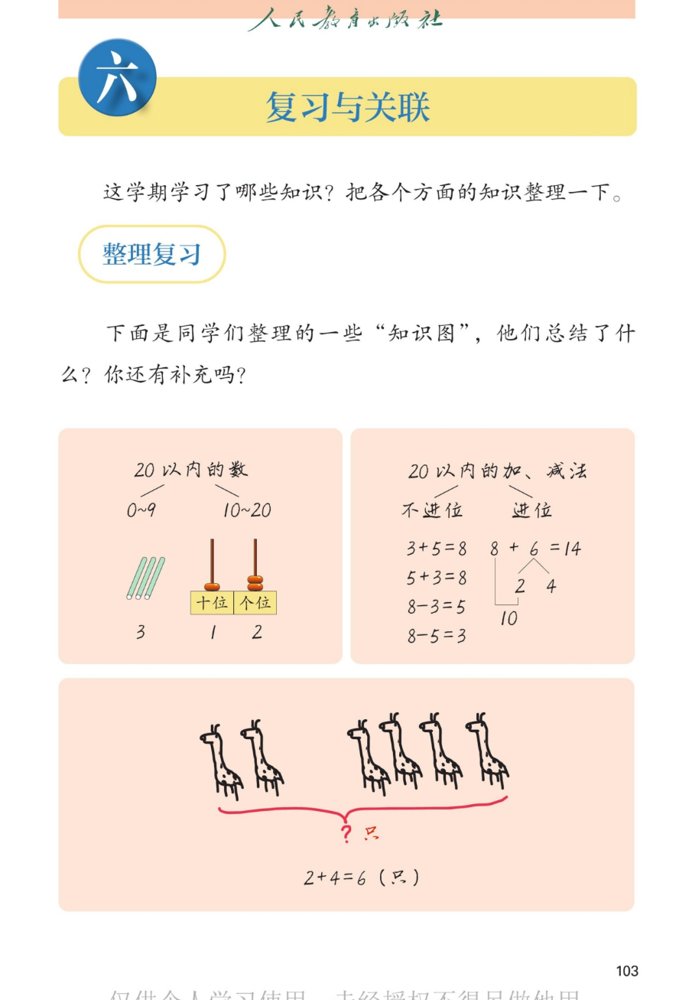
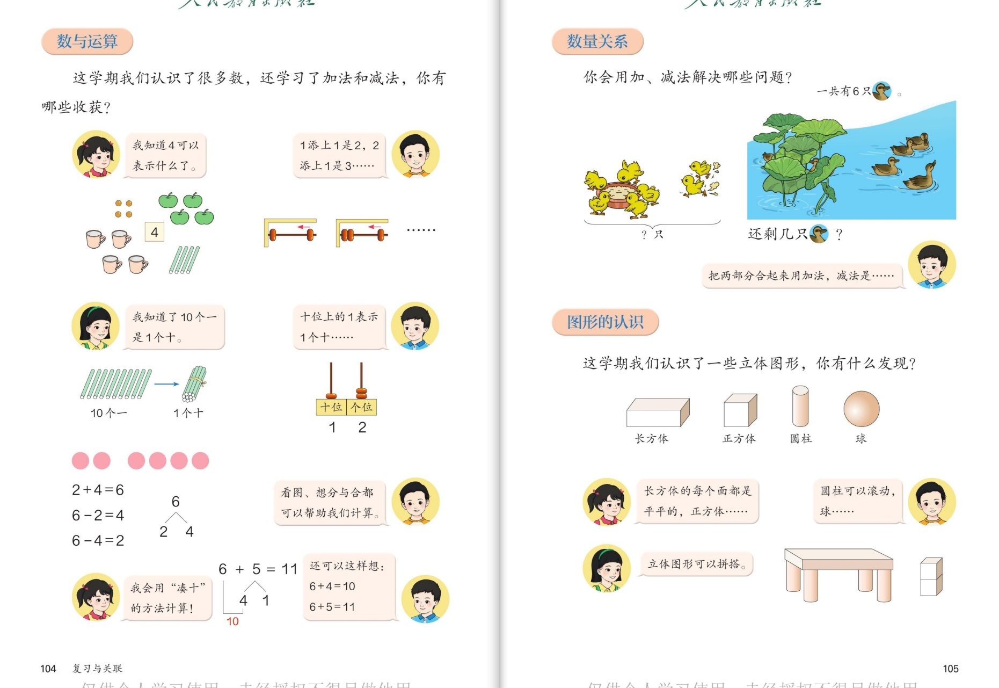
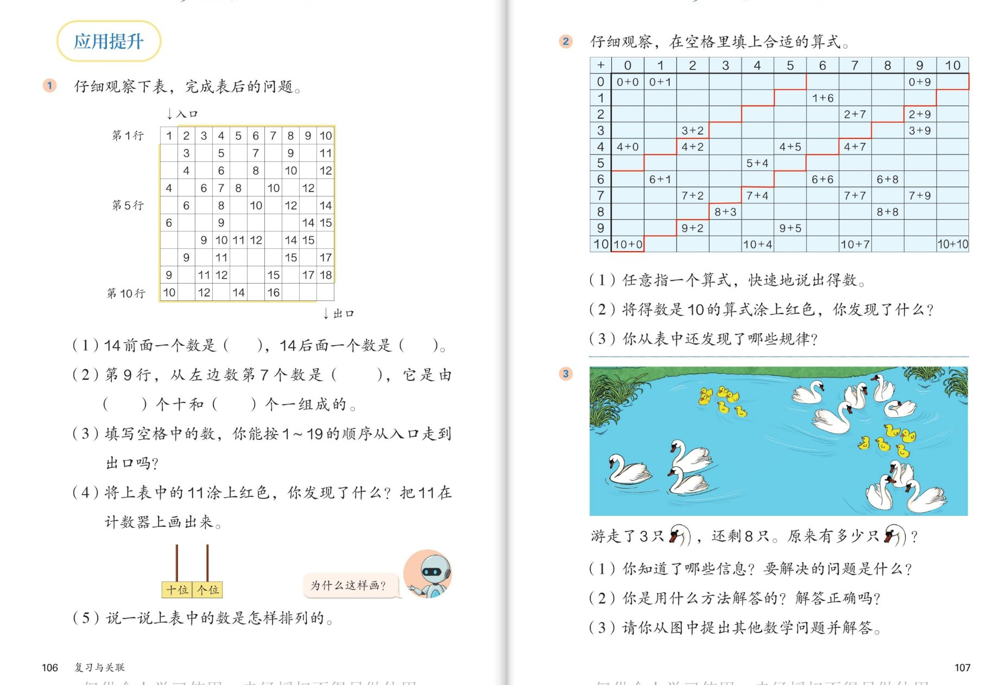
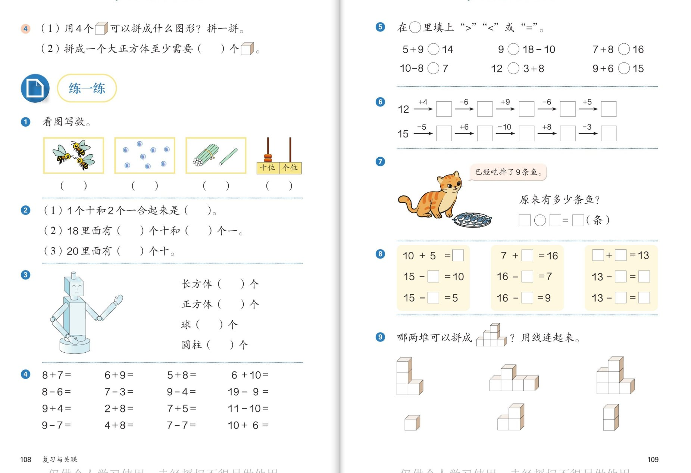
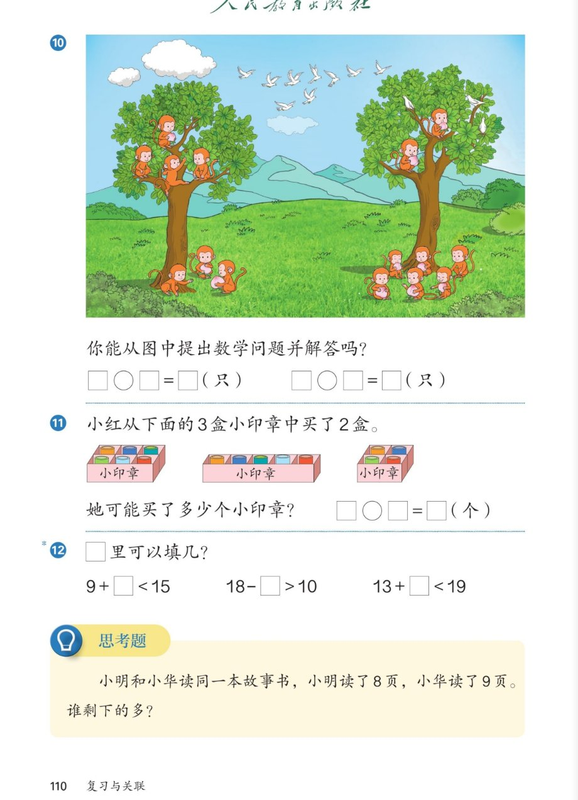

▲ 教材第103页：本学期学了什么？三张"知识图"示例（20以内的数／加减法／长颈鹿图）
认知📚
这学期我们都学习了哪些方面的知识？像同学们一样分成大类说一说。
看答案
参考答案：①数与运算：0~20各数的认识、20以内的加减法；②数量关系：用加、减法解决问题；③图形的认识：长方体、正方体、圆柱、球。🌈说法不唯一，能分出两三类、说出代表性内容即可。
认知🌳
第一张知识图把"20以内的数"分成了哪两段？用了哪些学具表示？
看答案
参考答案：分成0~9和10~20两段：0~9用小棒表示（3根小棒表示3），10~20用计数器表示（十位1颗、个位2颗表示12）。💡思考点：为什么从10开始要用两个数位？——10个一换成1个十，一个数位装不下了！
认知🦒
长颈鹿的知识图：大括号把两部分合起来，2＋4＝6（只）。这道图在提醒我们什么方法？
看答案
参考答案：左2只、右4只是两部分，大括号加"？只"表示合起来求总数——用加法。提醒我们：解决问题先看图找两部分，再想"合还是去"，最后列式。和第四单元的鸭子图、天鹅图是同一类。
强化➕
第二张知识图把加减法分成"不进位"和"进位"，3＋5 和 8＋6 分别属于哪类？为什么？
看答案
参考答案：3＋5＝8是不进位（个位相加不满十）；8＋6＝14是进位（要凑十：把6分成2和4，8加2得10，10加4得14）。图上特意画了"2和4→10"的分解——进位加法的标志就是要"凑十"。
强化🧲
把"数与运算""数量关系""图形的认识"三块知识连一连：凑十法属于哪块？长颈鹿大括号题属于哪块？积木拼搭属于哪块？
看答案
参考答案：凑十法、数数、比大小——数与运算；大括号合起来、还剩几个、原来有多少——数量关系；拼搭、滚动、摸一摸猜图形——图形的认识。💡思考点：三块知识不是孤立的，算得准才能解对题，数得好才能分清形。
拓展🖍️
你还想补充什么？试着画出属于你自己的"知识图"（可以只画一个方面）。
看答案
参考答案：🌈说法不唯一。示例：①"20以内的加法"知识图——分9加几、8加几、7加几…每列举2道；②"解决问题"知识图——加法问题（合起来、求原来）和减法问题（还剩、比多少）各画一幅小图；③"立体图形"知识图——四种图形各画一件生活中的物品。💡只要有分类、有例子，就是好知识图。
2
🧮 数与运算 · 数量关系 · 图形的认识
第104~105页

▲ 教材第104~105页：数的认识收获、一图四式、凑十；鸭子问题；立体图形发现
认知🔢
数与运算：4可以表示什么？"1添上1是2，2添上1是3"在说什么？
看答案
参考答案：4可以表示4个苹果、4只杯子、4根小棒、4个圆点——数量相同的物体都能用4表示（数是"数出来的"）。"1添上1是2，2添上1是3……"说的是后一个数总比前一个数多1（数的顺序与递增规律）。
认知🎨
看圆点图：2＋4＝6、6－2＝4、6－4＝2。一幅图为什么能写出这么多算式？
看答案
参考答案：因为部分与整体的关系：2和4是两部分，6是整体。部分＋部分＝整体（加法），整体－一部分＝另一部分（减法）。这就是"一图四式"的秘密——看图、想分与合都能帮我们计算。
强化🧷
凑十：6＋5＝11，还可以怎样想？十位上的1表示什么？
看答案
参考答案：把5分成4和1：6加4得10，10加1得11（也可以想5＋6，交换加数）。得数11里十位上的1表示1个十——正是凑出来的那个"十"！所以进位加法必满十，十位才能出现1。
强化🦆
数量关系：岸上4只鸭，水里还剩2只，一共有6只。分别可以提出什么问题？用什么方法算？
看答案
参考答案：①"一共有几只？"——两部分合起来，加法：4＋2＝6（只）；②"一共有6只，游走了2只，还剩几只？"——从整体去掉一部分，减法：6－2＝4（只）。男孩子的话点明了关键：把两部分合起来用加法，去掉一部分用减法。
强化📦
图形的认识：长方体、正方体、圆柱、球各有什么特点？桌子图是怎样拼搭的？
看答案
参考答案：长方体每个面平平的（放得稳）；正方体每个面都一样（方方正正）；圆柱可以滚动、竖放平稳；球四面八方都能滚（要卡住才稳）。桌子图：桌面用长方体、桌腿用圆柱竖放——下大上小、柱子立着放，桌子又稳又高。
拓展🌈
把本学期的方法连成一句话："数一数、画一画、分与合、凑一凑"，它们分别在什么时候用？
看答案
参考答案：🌈说法不唯一。数一数——认识数、点数验证；分与合——看图列式、想加减；画一画——解决问题（排队、原来有多少）时让过程看得见；凑一凑——算进位加法、连加连减。💡思考点：方法没有高低，会选方法的人最厉害——先想"这是什么问题"，再挑工具。
3
🧭 应用提升：数字迷宫 · 加法表 · 天鹅问题
第106~107页

▲ 教材第106~107页：数字迷宫表格、空格填算式的加法表、天鹅问题
认知🎮
数字迷宫：14前面一个数是几？14后面一个数是几？表中的数是按什么顺序排的？
看答案
参考答案：14前面一个数是13，后面一个数是15。表中数按1~19（1~20）的顺序蛇形/逐行排列：第1行1~10（从左到右），第2行接着往下排。说一说时用"第几行从左（右）数第几个"描述位置。
强化🧮
第(2)题：第9行，从左边数第7个数是多少？它是由几个十和几个一组成的？
看答案
参考答案：第9行的数从85段延续排列，从左数第7个数是17（以表中实际排列为准，先逐格点数再确认）。17是由1个十和7个一组成的。方法：先定位（第几行第几个），再读数，最后说组成。
强化🖍️
第(4)题：把表中的11都涂上红色，你发现了什么？11在计数器上怎么画？为什么这样画？
看答案
参考答案：涂色后发现：这些11恰好连成一条斜线（按顺序排列时相邻的11首尾相接）。计数器：十位拨1颗、个位拨1颗——两个"1"所在的数位不同，表示的意思不同（1个十和1个一）。机器人问"为什么这样画"就是要说出位值含义。
拓展🏁
加法表：将得数是10的算式涂上红色，你发现了什么？还能从表中找到哪些规律？
看答案
参考答案：得数是10的算式（0+10、1+9、2+8、3+7、4+6、5+5…）连成一条斜线；斜线左上方得数小于10（不进位），右下方得数大于10（进位）——这条斜线正好是"进位与不进位"的分界线！其他规律：同一行第一个加数不变、得数依次大1；交换加数得数相同的算式关于对角线对称。🌈发现不唯一。
拓展🦢
天鹅问题：游走了3只，还剩8只，原来有多少只？(1)(2)(3)三小问怎样完整回答？
看答案
参考答案：①信息：游走3只、还剩8只；问题：原来有多少只。②方法：原来的＝游走的＋剩下的，3＋8＝11（只）；验证：11－3＝8，正确✓。③🌈再提问题不唯一：如"游走后剩下的比游走的多几只？"8－3＝5（只）。💡又见"求原来用加法"——总复习里第三次出现，说明它最重要！
拓展🗺️
迷宫挑战：填好空格中的数，按1~19的顺序从入口走到出口。你的路线是什么？
看答案
参考答案：先把空格按"每一行接着上一行继续数"的规律补全（每行10个数，行末拐弯），再沿1、2、3…19逐格走，从入口进、出口出。💡思考点：先找规律再走路线，乱走必迷路——这就是"先观察、后动手"。
4
📝 练一练：数数 · 图形 · 口算 · 计算链
第108~109页

▲ 教材第108~109页：看图写数、数的组成、机器人数图形、口算、计算链、小鱼、填空、拼积木
认知🐝
第1题看图写数，第2题数的组成：1个十和2个一合起来是几？18、20里各有几个十和几个一？
看答案
参考答案：看图写数：蜜蜂、圆点、小棒、计数器逐一点数后写数（小棒图是1捆加几根，计数器按十位个位读）。组成：1个十和2个一＝12；18里面有1个十和8个一；20里面有2个十（个位上0表示"没有"但要占位）。
强化🤖
第3题：机器人身上长方体、正方体、球、圆柱各用了几个？怎样数才不重不漏？
看答案
参考答案：分类计数：认出一种图形就做记号数一个，从上到下（或从左到右）按顺序数。（各图形个数以实际点数为准；注意机器人的关节、底座里藏着圆柱和球。）方法：分四类，边数边记录，最后合起来检查。
强化⚡
第4题口算：8＋7、6＋9、19－9、11－10、10＋6、7－7……哪些一眼就能出答案？哪些要凑十？
看答案
参考答案：要凑十：8＋7＝15、6＋9＝15、5＋8＝13、9＋4＝13、2＋8＝10、7＋5＝12、4＋8＝12。一眼出答案：19－9＝10、11－10＝1、7－7＝0、10＋6＝16、6＋10＝16（整十加减、同数相减）。先分类再动笔，又快又对。
强化⛓️
第5题比大小、第6题计算链：9○18－10、12○3＋8；12＋4→－6→＋9→－6→＋5，怎样又稳又准？
看答案
参考答案：比大小：18－10＝8，9＞8填＞；3＋8＝11，12＞11填＜（先算再比）。计算链（另一行 15－5→＋6→－10→＋8→－3）：每步算完把得数写进方框，当作下一步的开头；口算完回头检查一遍，一步错步步错。
拓展🐟
第7题：小猫已经吃掉了9条鱼，盘子里还剩6条，原来有多少条鱼？第8题填空怎么想？
看答案
参考答案：9＋6＝15（条）（吃掉的＋剩下的＝原来的）。第8题：10＋5＝15、7＋9＝16、15－5＝10、15－10＝5、16－9＝7、16－7＝9、6＋7＝13、13－6＝7、13－7＝6。发现：每竖排三道题是同一组"部分＋部分＝整体"的加减Family！
拓展🧱
第4(1)(2)题与第9题：4个小正方体能拼成什么？拼一个大正方体至少要几个？哪两堆能拼成目标形状？
看答案
参考答案：4个小正方体可拼成长方体（排成一行2×1×4或2×2）；拼一个大正方体至少要8个（长宽高各2层）。第9题：先数出目标形状用几个，再看两堆的块数加起来是否正好、形状能否对上，试拼后用线连起来。💡方法：先数块数排除，再动手试拼验证。
5
🐒 猴子提问题 · 印章开放题 · 思考题
第110页

▲ 教材第110页：猴子图提问题、买印章、填数使不等式成立、思考题（谁剩下的多）
认知🐒
第10题：从猴子图中提出数学问题并解答（要列两道算式哦）。
看答案
参考答案：示例：①"左边的树和右边的树一共有多少只猴？"□＋□＝□（只）；②"树上的和树下的一共有多少只猴？"□＋□＝□（只）。（猴子数量以实际点数为准，如树上7只树下8只，7＋8＝15。）关键：先把猴子分成两部分（按树分或按位置分），再提问、列式。
强化🎫
第11题：小红从3盒小印章中买了2盒，她可能买了多少个小印章？有几种可能？
看答案
参考答案：先数出3盒各自的数量（以图中实际点数为准，如5个、6个、7个），再一一列举三种买法：①②两盒、①③两盒、②③两盒，分别相加得三种结果（如5＋6＝11、5＋7＝12、6＋7＝13）。💡有序列举才不漏！
强化🔢
第12题：□里可以填几？9＋□＜15、18－□＞10、13＋□＜19。怎样把答案找全？
看答案
参考答案：①9＋□＜15：先想 9＋6＝15，所以□填0~5；②18－□＞10：先想 18－8＝10，所以□填0~7；③13＋□＜19：先想 13＋6＝19，所以□填0~5。方法：先想"等于"的临界算式，再退一步找范围；从小往大试填并检验。
拓展🤔
思考题：同一本故事书，小明读了8页，小华读了9页，谁剩下的多？为什么？
看答案
参考答案：小明剩下的多。因为同一本书总页数一样：读得多，剩下的就少；读得少，剩下的就多（剩下的页数和读的页数正好相反）。举例验证：若共20页，小明剩20－8＝12页，小华剩20－9＝11页，12＞11✓。💡思考点：这是"逆向比较"——比较的不是读的，而是剩下的一层。
拓展🔄
回望一学期：从"数数"到"解决问题"，哪两个知识像"手拉手的好朋友"？说说它们是怎么配合的。
看答案
参考答案：🌈说法不唯一。示例：①分与合和加减法——分与合是加减法的根基，会分才会算；②凑十法和20以内进位加法——凑十是算进位加法的钥匙；③画图和解决问题——画图让"原来有多少""排队"变简单。💡思考点：知识"手拉手"，复习就是把线头找出来重新系好。
拓展🌟
给自己出题：用本学期学的知识，编一道"最得意"的题考考爸爸妈妈，并准备好答案和讲题。
看答案
参考答案：🌈说法不唯一。示例：①凑十题：8＋7＝？（8加2得10，10加5得15）；②逆向题：吃掉9个饺子还剩6个，原来多少个？9＋6＝15；③图形题：桌子为什么用长方体做桌面、圆柱做桌腿？（平而稳＋竖着放高）；④思考题变式：同一盆花，妹妹浇了3天哥哥浇了5天，谁剩下的天数少？讲题时用三步法：先说图意，再说方法，最后算并检查。